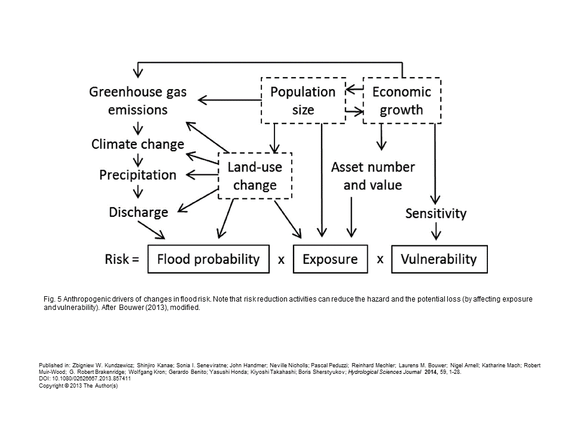
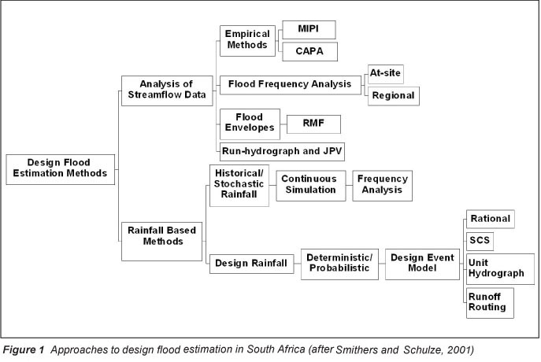
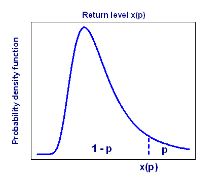
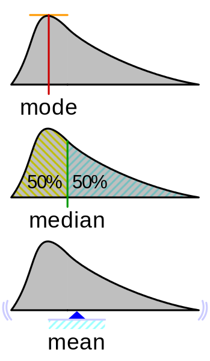
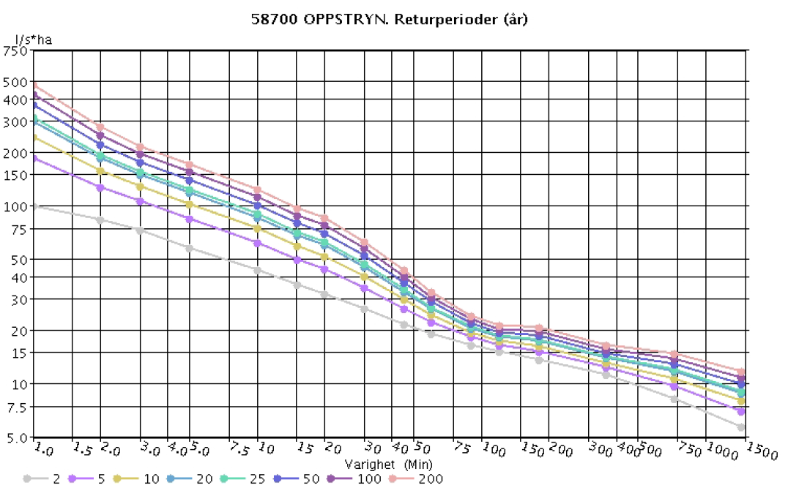

Types of flood
- flash floods: rapid, localized, associated with intense precipitation
- coastal floods: sea level rise from tsunamis or storm surges
- urban floods: flooding resulting from urbanization, usually linked to intense rather than sustained precipitation
- fluvial floods: rivers rise out of the banks, due to sustained intense rainfall (catchment-scale)
- ponding (pluvial flood): local ponding due to rainfall intensity exceeding infiltration
- groundwater rise (very local): flood of cellars and other low areas due to extraordinary shallow water table
Defining flooding risk

Flood zoning and risk assessment
- Get flood return levels (design flood) for an area (or model discharge from extreme precipitation)
- Use a hydraulic model to understand how high the water level will come (HEC-RAS for example)
- Intersecting those water levels with the topography gives flood zone maps(see NVE map catalog)
- Do a risk and vulnerability assessment (ROS: risiko og sårbarheitsanalyse) of the infrastructure in the flood zones
- Decide on protection measures, change the land use plan, or implement warning systems
Design flood estimation methods

Vocabulary
- Annual exceedance probability
- Probability (\(p\)) that a flood will be equal or greater than a specific flood discharge called return level (or design flood).
- Return period (also called return interval)?
- The recurrence period (\(T\)) of a flood event equal or greater than the corresponding return level (\(Q_T\))
- Also means: the average time until the next occurrence of an event equal or greater than \(Q_T\) is \(T\) years
- What is the relationship between the probability \(p\) and the return period \(T\)?
- \(T = 1/p\)
- What is the probability of a 100-year flood happening in any given year?
- 1/100 = 0.01
- Can a 100-year flood happen 2 years in a row?
- Yes
- What would be the probability of this happening?
- \(0.01*0.01 = 0.0001\)
Flood probability exercises

- Probability of a 100-year flood not happening in 100 years?
- \((1-0.01)^{100} = 36.6\%\)
- Of course, if the expected floods don’t happen anymore, the flood should maybe be re-estimated.
- What is the probability of having a 25-year flood in a 10 year period?
Last question in steps
- What’s the probability of a 25-year flooding event occurring each year?
- \(1/25 = 4\%\)
- What is the probability that a 25-year flood will not occurr in any given year?
- \(1 - 1/25 = 96\%\)
- What’s the probability that there will not be a 25-year flood in a 10 year period?
- \(0.96^{10} = 66.5\%\)
- What’s the probability that there will be a 25-year flood with a 10 year period?
- \(100 - 66.5 = 33.5\%\)
Probability distribution functions (pdf)
- Why does the mean annual flood correspond to a return period of 2.3 years?
- The Gumbel probability distribution is designed so that the average flood (arithmetic mean of all floods in the record) has a theoretical return period of 2.33 years.
- On the other hand, the median flood corresponds to a return period of …?
- 2 years, because the median corresponds to a 50% probability of occurence
Probability distributions
- mode, mean and median?
- 
Probability distributions moments
- Name the first 3 moments (0th, first and second) of a probability distribution
- Mean, variance, skewness
- Draw the impacts of an increase in mean of hydrological extremes
- Draw the impacts of an increase in variance of hydrological extremes
Probability distributions (mean and variance)

Analogy between moments of a pdf and mechanics
- Analog of the mean?
- Center of mass
- Analog of variance?
- Moment of inertia (also know as angular mass or rotational area)
- The \(0^{th}\) moment is mechanics is the weight. What is it for a pdf?
- 1: the integral of the pdf is equal to a 100% probability!
Intensity-Duration-Frequency Curve
- Draw what you think an IDF curve looks like (no need for numbers)
- 
Two main methods to select flood data

- Peak over threshold or annual maximum series?
- Peak over threshold
Two main methods to select flood data

Flood frequency analysis

The estimated maximum flood
It is the “theoretical” largest flood that can happen in a catchment. It can be estimated based on maximum precipitable water. It can be useful for the design of spillways and other safety hydraulic constructions.
Flood forecasting

Take home messages

- Extreme values derived for both river discharge and precipitation (IDF curves)
- Annual exceedance probability is the probability \(p\) that a flood will be equal or greater than a specific return level \(Q_T\) (for the return period \(T=1/p\))
- Flood frequency analysis: various statistical methods based on fitting probability distributions to historical data
- Most methods used (so far in most countries) assume stationarity
- Extremes discharge values can be hydrological modelling results of applying extreme precipitation to specific catchments
- Think about different types of drought
- meteorological (lack of precipitation)
- hydrological (lack of streamflow, soil moisture and/or groundwater)
- agricultural (lack of plant available water, during specific periods of growth)
- socioeconomic (impact human activities like energy production)
- ecological (long and widespread deficit in water, affecting whole ecosystems)
- 21: seasonality of floods in austria / CH
- 22: importance of antecedent soil moisture conditions
- 26: use of indicator plants in the field
- 29: two very different catchment responses. Interesting influence of lanscape forms / geology.
- 32: climate change scenarios
- 37: hydrodynamic simulations
- 40: socio hydrology: green society vs techno society. Very good!
- 44: flood damage with those 2 scenarios
On non stationarity in flood frequency analysis: - Changes in the last 30/40 years are the effect of urbanization not climate change - Be careful in assessing the cause of a non stationarity